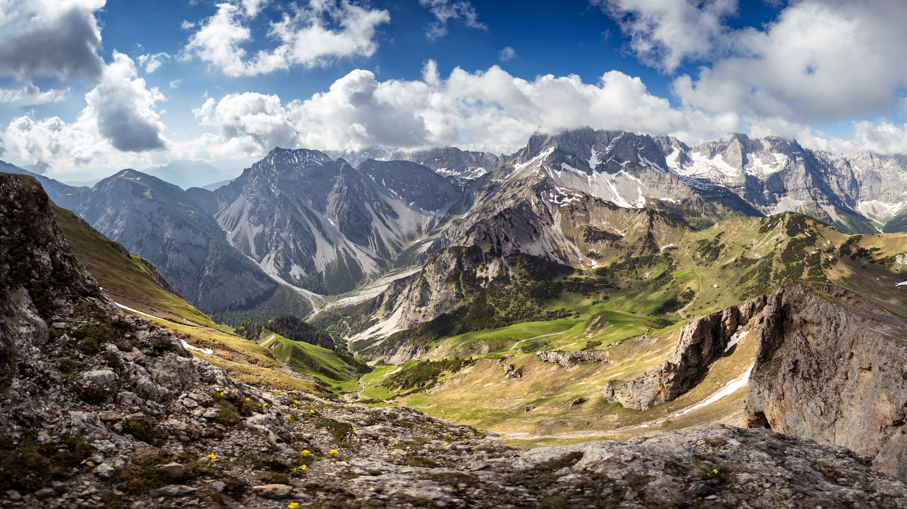
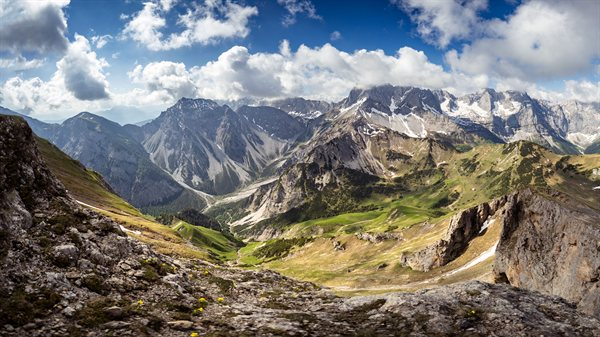

Original Image
The same frame in four formats. Every link opens in a new tab so this page stays where it is.
A picture on the web is not one decision but four: its format, its pixel dimensions, its file size, and the size it is displayed at. The two images below walk through the same five demonstrations each time — once with a 6,843-pixel landscape photo, and once with an 800-pixel photo I took myself. Every derivative is named for what it is, and the originals are never modified.
I chose this photo because nature photography is my favorite kind of photography, and this frame has the scale and fine detail the assignment asks for. It was taken by Marek Piwnicki, a landscape and travel photographer from Gdynia, Poland, who publishes his work for free on Pexels. The original is a JPEG, 6843 × 3849 pixels, and 4.59 MB.
The same frame in four formats. Every link opens in a new tab so this page stays where it is.


One dimension stays true while the other is cut by 33%, then by 33% again. The two on the left are squeezed horizontally; the two on the right are flattened vertically.
Both images below display at 600px wide. The second comes from a file that is only 25% that size, so the browser has to stretch it to fill the same space.
I wanted a profile picture that was not a standard selfie, and I was by myself, so I shot myself through the round mirror on my motorcycle. The mirror is a true circle, which makes it the ideal counterweight to a human face. I took this one myself. The original is a WebP, 800 × 800 pixels, and 96.9 KB (0.09 MB).
The same frame in four formats. Every link opens in a new tab so this page stays where it is.
The circle makes the distortion obvious. One dimension stays true while the other is cut by 33%, then by 33% again: the two on the left become vertical ellipses, the two on the right become horizontal ones.
Both images below display at 600px wide. The second comes from a file that is only 25% that size, so the browser has to stretch it to fill the same space.